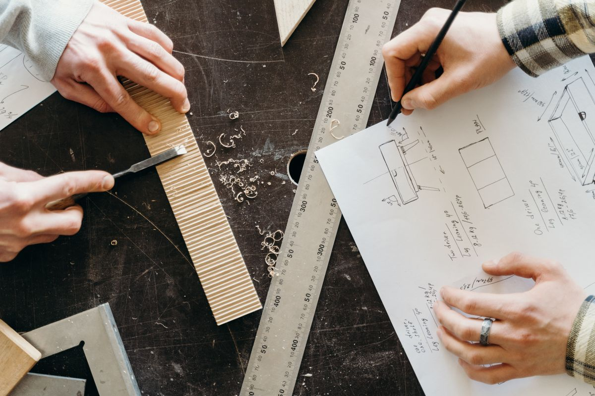
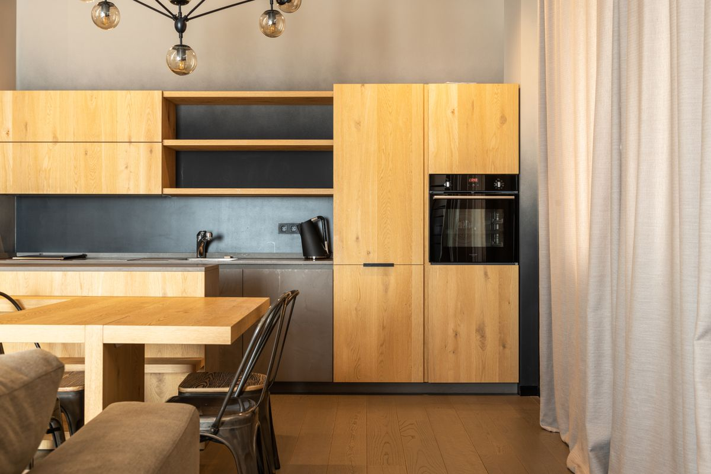
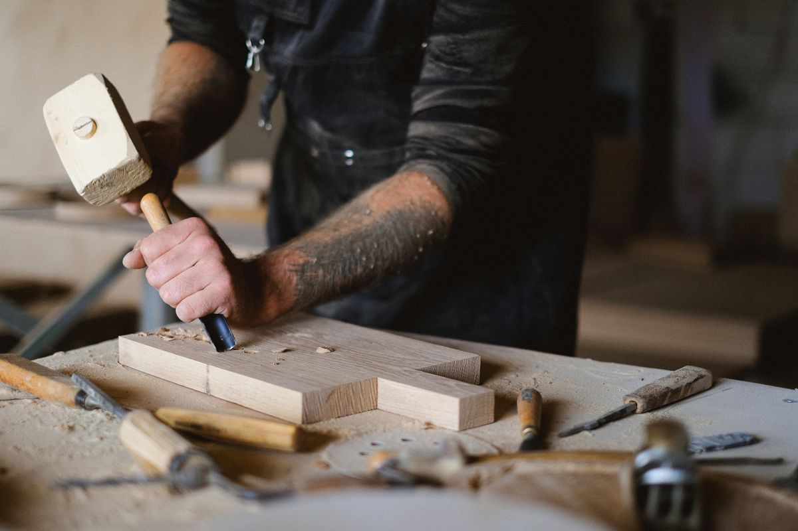

Preisbausteine, drei durchgerechnete Beispielküchen, Spartipps und eine Checkliste für Ihr Beratungsgespräch.
„Was kostet so eine Küche ungefähr?“ – diese Frage hören wir in unserer Ausstellung jeden Tag. Und wir verstehen sie gut: Niemand möchte Stunden in eine Planung stecken, um am Ende festzustellen, dass das Budget nicht einmal für die Hälfte reicht.
Deshalb haben wir die Zahlen aus über 400 Küchenprojekten der letzten Jahre ausgewertet. Auf den folgenden Seiten erfahren Sie, aus welchen Bausteinen sich der Preis zusammensetzt, was typische Küchen bei uns kosten und an welchen Stellen Sie sinnvoll sparen können.

| 1 | Die fünf Preisbausteine einer Maßküche | Seite 3 |
| 2 | Drei Beispielküchen mit Preisen | Seite 4 |
| 3 | Wo sich Sparen lohnt – und wo nicht | Seite 5 |
| 4 | Maßküche oder Möbelhausküche? Ein fairer Vergleich | Seite 6 |
| 5 | Checkliste für Ihr Beratungsgespräch | Seite 7 |
Alle Preise sind Richtwerte inkl. 19 % MwSt., Stand 2026, für Projekte im Raum Hamburg. Holzwerk Hanssen ist ein fiktives Unternehmen, dieser Ratgeber ein Beispieldokument für Schulungszwecke.
Jede Küche besteht aus denselben fünf Bausteinen. Wie groß der Anteil jedes Bausteins ist, hängt von Ihren Wünschen ab – die folgende Verteilung zeigt den Durchschnitt unserer Projekte.
Der größte Posten. Entscheidend sind Material (Lack, Furnier, Massivholz) und die Zahl der Auszüge: Ein Auszug kostet durch Beschlag und Aufwand etwa das Dreifache einer Drehtür.
Hier ist die Spanne am größten. Ein solides Paket aus Backofen, Kochfeld, Kühlschrank und Spülmaschine beginnt bei rund 3.500 €, Premiumgeräte mit Dampfgarer und Muldenlüfter liegen schnell bei 12.000 € und mehr.
Schichtstoff ab 150 € pro laufendem Meter, geölte Eiche ab 450 €, Naturstein und Keramik ab 700 €. Ausschnitte für Spüle und Kochfeld kommen hinzu.
Aufbau, Anpassung an Wände, Anschluss von Wasser und Geräten. Im Altbau mit schiefen Wänden eher am oberen Ende.
Aufmaß und 3D-Planung, Spüle und Armatur, LED-Beleuchtung unter Oberschränken. Kleine Posten, die in der Summe zählen.
| Küchenzeile | L-Küche | Wohnküche mit Insel | |
|---|---|---|---|
| Größe | 3,6 m | 7 m | 9 m + Insel |
| Fronten | Lack matt | Eiche furniert | Eiche massiv |
| Korpusse & Fronten | 4.200 € | 7.900 € | 14.800 € |
| Arbeitsplatte | 650 € | 3.200 € | 6.400 € |
| Elektrogeräte | 3.100 € | 5.200 € | 9.800 € |
| Spüle, Armatur, Licht | 550 € | 1.100 € | 2.300 € |
| Planung & Montage | 1.400 € | 2.600 € | 4.100 € |
| Gesamt | 9.900 € | 20.000 € | 37.400 € |

Der Sprung von der Zeile zur L-Küche kommt nicht nur von der Länge, sondern vor allem von der Echtholz-Arbeitsplatte. Bei der Wohnküche machen Massivholzfronten und Premiumgeräte den Unterschied.

Möbelhausküchen sind nicht grundsätzlich schlecht – und Maßküchen nicht automatisch teurer. Der Vergleich lohnt sich aber nur bei gleicher Ausstattung.
| Möbelhaus / Küchenstudio | Tischlerei | |
|---|---|---|
| Schrankbreiten | festes Raster (30/40/60 cm …), Rest wird verblendet | jede Breite millimetergenau |
| Materialien | überwiegend Folie, Lack, Dekor | Lack, Furnier, Massivholz, Linoleum |
| Altbau & Schrägen | oft Kompromisse nötig | Spezialität |
| Montage | häufig Subunternehmer | eigenes Team |
| Reparatur & Erweiterung | abhängig von Modellserie | jederzeit, auch nach Jahren |
| Preis bei gleicher Ausstattung | ähnlich bis 15 % günstiger | ähnlich bis 15 % teurer |
Nehmen Sie diese Liste mit zu jedem Küchenplaner – ob zu uns oder zur Konkurrenz. So können Sie Angebote wirklich vergleichen.
Das Aufmaß bei Ihnen vor Ort ist kostenlos und unverbindlich. Innerhalb von zehn Werktagen erhalten Sie eine 3D-Planung und ein Festpreisangebot.
Mo–Do 7:00–16:30 Uhr · Fr 7:00–13:00 Uhr
info@holzwerk-hanssen.example
Werkstatt & Hauptsitz
Werkstattweg 14, 22761 Hamburg
Niederlassung Nord
Am Sägewerk 3, 22844 Norderstedt
Ausstellung Ost
Hobelweg 7, 22926 Ahrensburg
Holzwerk Hanssen ist ein fiktives Unternehmen. Dieses Dokument dient als Beispiel-Whitepaper für Schulungen zu Google Tag Manager, Google Analytics und Google Ads. Fotos: Pexels.